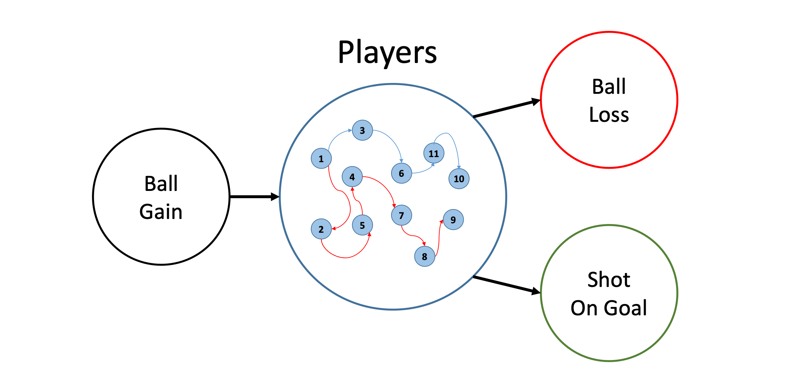
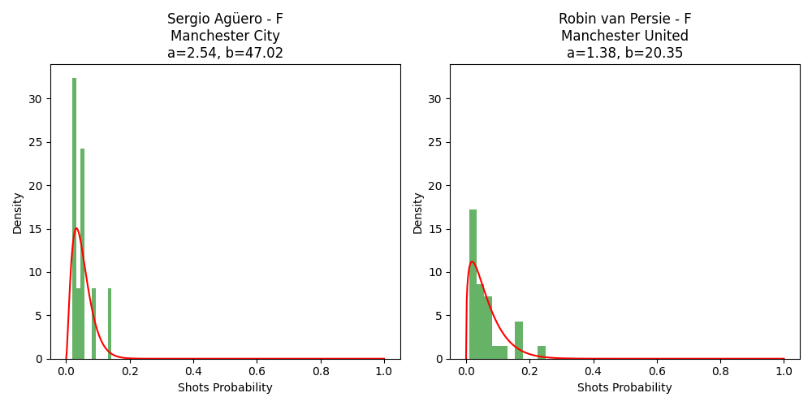
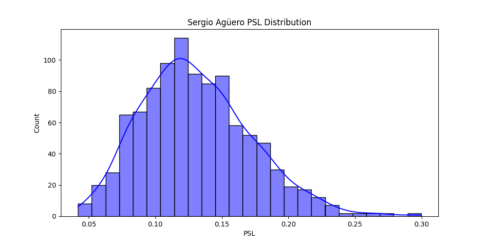
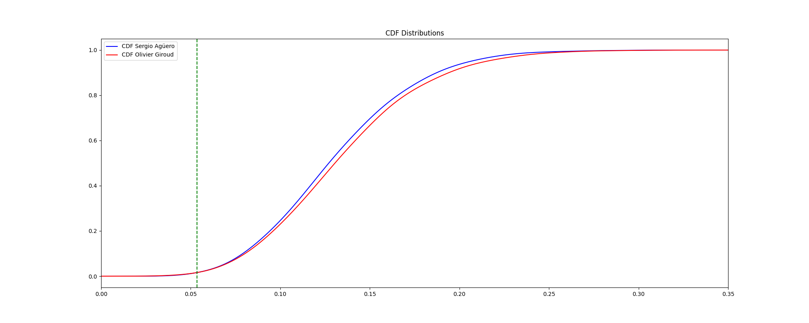
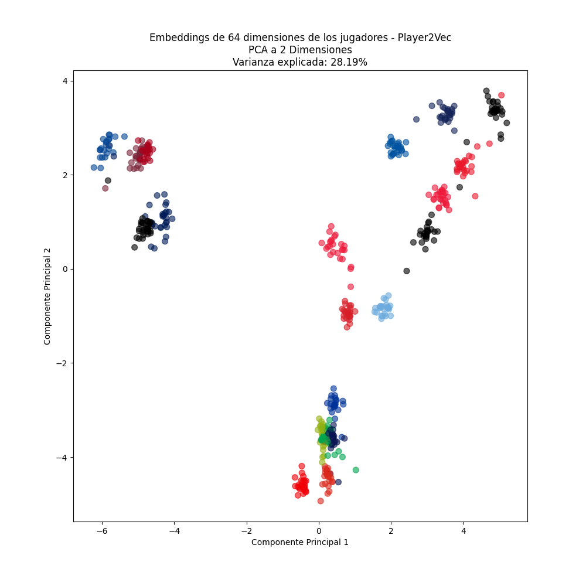
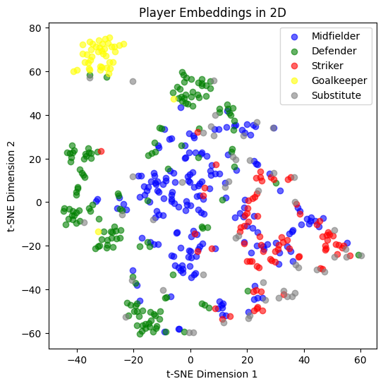
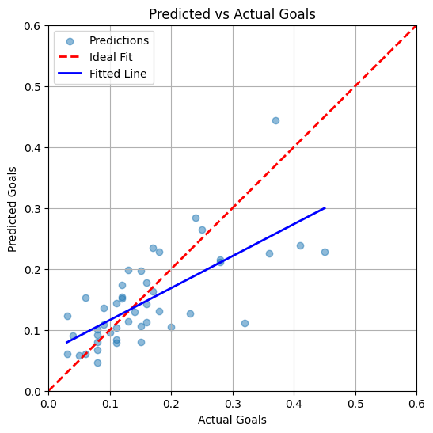

Player2Vec.
The Problem: Measuring a Player's True Impact
$$xG(A) = P(A) \cdot PSL(A) \cdot SA(A)$$
1. The Player Network: A 14-State Markov Chain

$$r(G, J_i) = \frac{\text{Ball Gains by } J_i}{\text{Time Played}} \qquad
r(J_i, S) = \frac{\text{Shots by } J_i}{\text{Time Played}}$$
$$r(J_i, J_j) = \frac{\text{Passes from } J_i \text{ to } J_j}{\text{Shared Time}} \qquad
r(J_i, L) = \frac{\text{Losses by } J_i}{\text{Time Played}}$$
$$PSL(A) = [1, 0, \ldots, 0] \cdot (I - T)^{-1} \cdot X \cdot [0, 1]^T$$
3. Every Player Has a Distribution, Not Just a Number

4. Estimating Team PSL via Monte Carlo Simulation

5. Three Levels of Rigor for Comparing Lineups
① Moment Comparison
② Probabilistic Dominance
$$P(PSL_{\text{Giroud}} > PSL_{\text{Agüero}}) \approx 0.542$$
③ Stochastic Dominance

6. Player2Vec: Embedding Players into Vector Space

7. Predicting Future Transition Distributions
$$\text{Improvement} = \frac{0.0353 - 0.01449}{0.0353} \approx \mathbf{58.99\%}$$
8. Validation: Predicting Real Transfer Outcomes
Case Study: James Milner → Liverpool ✓
Case Study: Danny Welbeck → Arsenal ✗
| Player | Position | From → To | Recommendation |
|---|---|---|---|
| James Milner | Midfielder | Man City → Liverpool | ✓ Recommended |
| Andros Townsend | Midfielder | Tottenham → Newcastle | ✓ Recommended |
| Juan Mata | Midfielder | Chelsea → Man United | ✓ Recommended |
| Romelu Lukaku | Forward | Chelsea → Everton | — Undecided |
| Ryan Bertrand | Defender | Chelsea → Southampton | ✗ Not Recommended |
| Danny Welbeck | Forward | Man United → Arsenal | ✗ Not Recommended |
Future developement

